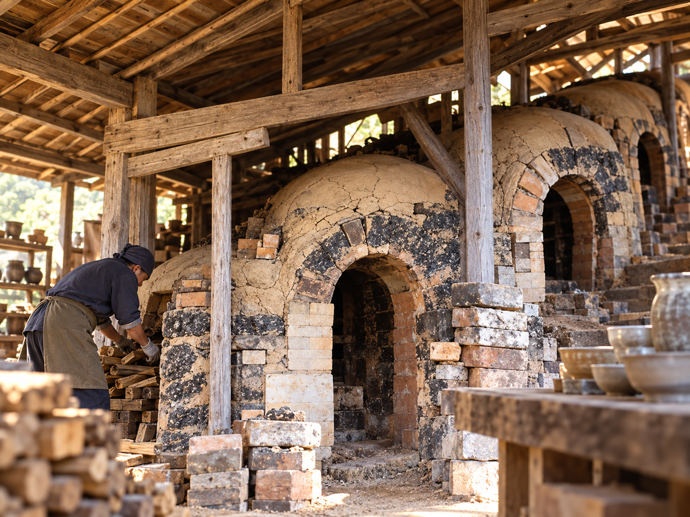

民藝の火を灯した先人と、
現在に息づく手仕事。
鳥取に残る窯元、牛ノ戸焼
鳥取市河原町にある「牛ノ戸焼（うしのとやき）」は、江戸時代末期から続く窯元です。地元の土を使い、日々の暮らしの中で使われる素朴で丈夫な日用雑器を作り続けてきました。しかし、現代の牛ノ戸焼を語る上で欠かせないのが、今から約100年前の「ある出会い」です。
吉田璋也と「緑釉黒釉染分皿」
1931年、鳥取に帰郷して医院を開業した医師であり民藝運動家の吉田璋也（よしだしょうや）は、牛ノ戸焼の四代目・小林秀晴と出会います。当時の民藝運動の指導者であった柳宗悦らに共鳴していた吉田は、牛ノ戸焼の窯元に足を運び、新しい生活様式に合った器の制作を提案しました。

そこで生まれたのが、現在も牛ノ戸焼の象徴となっている「緑釉黒釉染分皿（りょくゆうこくゆうそめわけざら）」です。緑と黒がくっきりと半分ずつ染め分けられたモダンなデザインは、瞬く間に全国の民藝ファンを魅了しました。
先駆的な「プロデューサー」としての姿
吉田璋也の凄さは、ただデザインを指導しただけではありませんでした。吉田自身が「民藝のプロデューサー」として活動し、商品開発から販売、流通に至るまで深く関わったのです。1932年には「たくみ工芸店」を鳥取市内に開き、作られた器を流通・販売する仕組みまでを自らの手で作り上げました。
「昔からある工芸をそのまま保存する」のではなく、「時代の生活に合わせた商品として再編集し、外の世界へ届ける」。このデザインから流通に至る一連のシステム構築は、現代の商品開発の先駆けと言えます。
現在の作り手と、SAN-IN HIDDEN JAPAN

現在の作り手は、六代目・小林孝男氏と七代目・小林遼司氏。彼らは伝統を守りながら、現代の暮らしに合う器やインテリアにも積極的に取り組んでいます。
吉田璋也が約100年前に行った「地域の技術を商品として再編集し、外へ届ける」という行為は、まさにSAN-IN HIDDEN JAPANが目指す事業思想と完全に一致しています。私たちは、この土地が持つ「手仕事のDNA」を、現代の価値として改めて全国へ提案します。